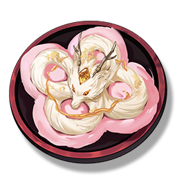

Loong Whiskers Crisp
Supplies

Restore 50 points of Stamina.
Loong Whiskers Crisp covered with Dreamy Floss, rich in taste, leaves a lingering fragrance on the lips and teeth.
Danjin loves Loong Whiskers Crisp, but such a small one, she can never get enough.
The familiar stall owner sister told her, adding some favorite ingredients to the Loong Whiskers Crisp can double the sweetness.